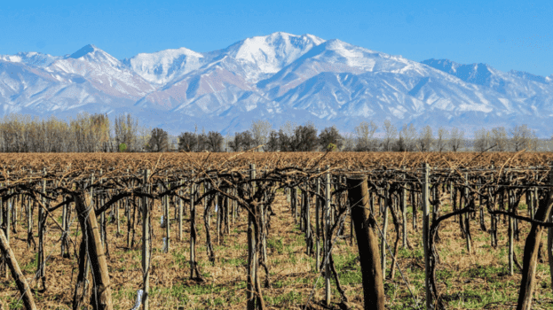

About Me
My name is Germán Vargas. I am from Mendoza, Argentina. I currently work as Mentor for BYU-Pathway students while I am studying a Software Development degree. I also study a second Bachelor's Degree in Economics and Finance in Argentina. I served as a full-time misisonary in the Chile Rancagua Mission where I returned from in 2023.
Web Dev Resources
Mendoza, Argentina
Mendoza is a picturesque state located in the foothills of the Andes Mountains in Argentina. Known for its stunning landscapes, it is the heart of Argentina’s wine production. The region features a semi-arid climate, which is ideal for vineyards, and its charming towns offer a blend of colonial architecture and modern amenities. Mendoza attracts travelers from all over the world seeking both adventure and gourmet experiences, making it a perfect getaway for enthusiasts and nature lovers.